Repaso Prueba 2
Ejercicio 1
Calcular el área de la región determinada por: y = e^x \quad y = xe^x \quad x = 0
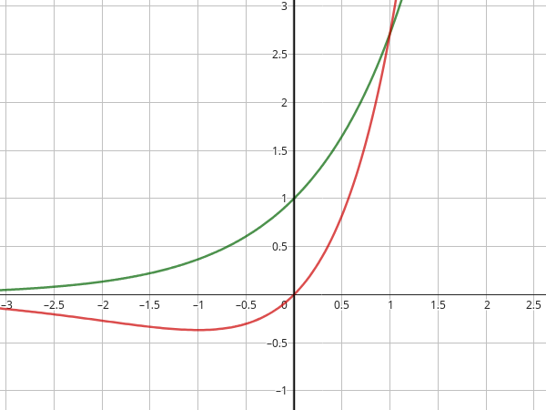
Buscamos el punto de intersección entre las dos funciones: e^x = xe^x e^x(1-x) = 0 x = 1
Por lo que la integral va de 0 a 1.
La función superior es e^x y la inferior es xe^x. A = \int_0^1 (e^x - xe^x) dx

A = \int_0^1 e^x - \int_0^1 xe^x dx La segunda integral se resuelve por partes: \int u dv = uv - \int v du Definimos las variables: u = x \quad dv = e^x dx du = dx \quad v = e^x Sustituyendo en la integral: \int xe^x dx = xe^x - \int e^x dx
\int xe^x dx = xe^x - e^x Por lo que la integral original queda: e^x - (xe^x - e^x) \bigg|_0^1 e^x - xe^x + e^x \bigg|_0^1 2e^x - xe^x \bigg|_0^1 2e^1 - 1e^1 - (2e^0 - 0e^0)
2e - e - 2 = e - 2 \approx 0.72
Ejercicio 2
Calcula el área de la región encerrada entre las curvas: x = 2y^2 \quad x = 4 + y^2
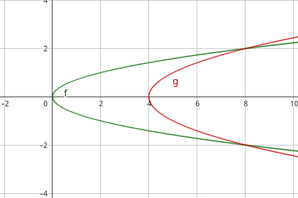
Inmediatamente, podemos ver que esta área no es calculable con la integral en x, ya que las áreas se cancelan. Por lo que debemos calcular el área en y.
Para calcular la integral en y, debemos despejar las funciones, pero no es necesario en este caso.
Tenemos que encontrar los puntos de intersección en y entre las dos funciones, para esto igualamos las funciones: 2y^2 = 4 + y^2 2y^2 - y^2 = 4 y^2 = 4 y = 2 \quad y = -2 Por lo que la integral va de -2 a 2, y la función superior es 4 + y^2.
A = \int_{-2}^2 (4 + y^2 - 2y^2) dy A = \int_{-2}^2 (4 - y^2) dy A = \int_{-2}^2 4 dy - \int_{-2}^2 y^2 dy A = 4y - \frac{y^3}{3} \bigg|_{-2}^2 A = 4(2) - \frac{(2)^3}{3} - (4(-2) - \frac{(-2)^3}{3})
A = 8 - \frac{8}{3} + 8 - \frac{-8}{3} A = 16 - \frac{8}{3} - \frac{8}{3} A = 16 - \frac{16}{3} A = \frac{48}{3} - \frac{16}{3} A = \frac{32}{3}
Ejercicio 3
Calcula el área de la región encerrada entre las curvas: y = \cos(\pi x) \quad y = 4x^2 - 1
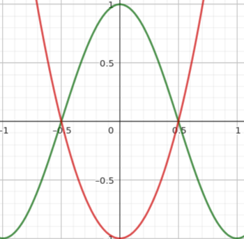
No nos dan los límites de integración, por lo que debemos calcular los puntos de intersección entre las dos funciones. Para esto igualamos las funciones: \cos(\pi x) = 4x^2 - 1 4x^2 - \cos(\pi x) = 1 Esta ecuación no tiene solución analítica, por lo que debemos probar valores.
Dado que los valores de cos van de -1 a 1, podemos encontrar valores de x que sumen 1. x = 0 \quad y = 4(0)^2 - 1 = -1 x = 1 \quad y = 4(1)^2 - 1 = 3 x = 0.5 \quad y = 4(0.5)^2 - 1 = 0 x = 0.25 \quad y = 4(0.25)^2 - 1 = -0.5 x = 0.75 \quad y = 4(0.75)^2 - 1 = 2.5 x = -0.5 \quad y = 4(-0.5)^2 - 1 = 0
Los puntos de intersección son: x = 0.5 \quad x = -0.5 Por lo que la integral va de -0.5 a 0.5. La función superior es cos(\pi x) y la inferior es 4x^2 - 1. A = \int_{-0.5}^{0.5} (\cos(\pi x) - (4x^2 - 1)) dx \int_{-0.5}^{0.5} (\cos(\pi x) + 1 - 4x^2) dx \frac{sen(\pi x)}{\pi} + x - \frac{4x^3}{3} \bigg|_{-0.5}^{0.5}
\frac{\sin(\pi (0.5))}{\pi} + 0.5 - \frac{4(0.5)^3}{3} - \left(\frac{\sin(\pi (-0.5))}{\pi} - 0.5 + \frac{4(-0.5)^3}{3}\right)
Simplificando:
= \frac{\sin\left(\frac{\pi}{2}\right)}{\pi} + 0.5 - \frac{0.5}{3} - \left(\frac{\sin\left(-\frac{\pi}{2}\right)}{\pi} - 0.5 - \frac{-0.5}{3}\right)
= \frac{1}{\pi} + \frac{1}{2} - \frac{1}{6} - \left(\frac{-1}{\pi} - \frac{1}{2} + \frac{1}{6}\right)
= \frac{1}{\pi} + \frac{1}{3} - \left(\frac{-1}{\pi} - \frac{1}{3}\right)
= \frac{1}{\pi} + \frac{1}{3} + \frac{1}{\pi} + \frac{1}{3}
= \frac{2}{\pi} + \frac{2}{3}
Ejercicio 4 (Sólido de revolución)
Calcula el volumen del sólido generado al rotar la región encerrada entre las curvas en el eje x: y = x^3 \quad, y = x \quad, x \ge 0
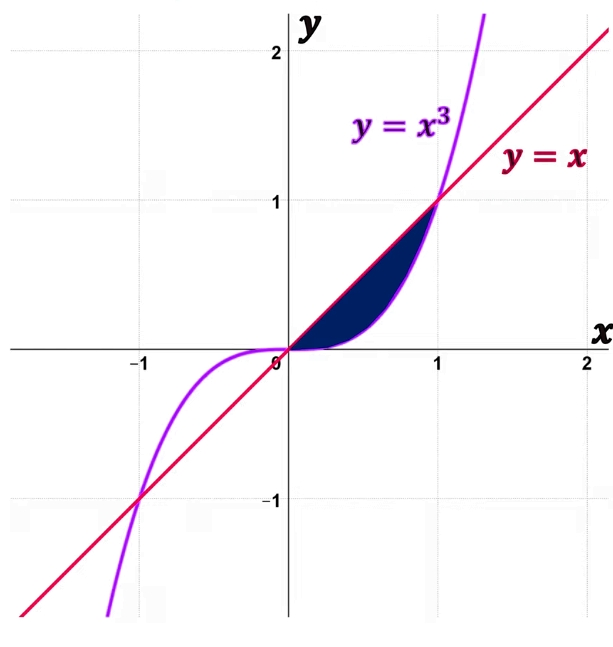
La función no toca el eje x en todos los puntos, no se puede calcular por método de discos.
Se puede calcular por método de anillos, ya que nos dan funciones que claramente están encima de la otra.
No se puede calcular en base al metodo por capas, dado que son 2 funciones.
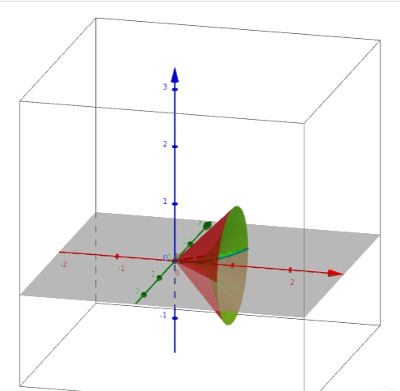
Ejercicio 5
Calcular el volumen del sólido generado al rotar la región limitada en el eje y: y = x(x-1)^2 \quad y = 0
No podemos usar el método de discos, ya que la función no toca el eje y en todos los puntos.
Tampoco el de anillos, ya que no tenemos una función que esté encima de la otra.
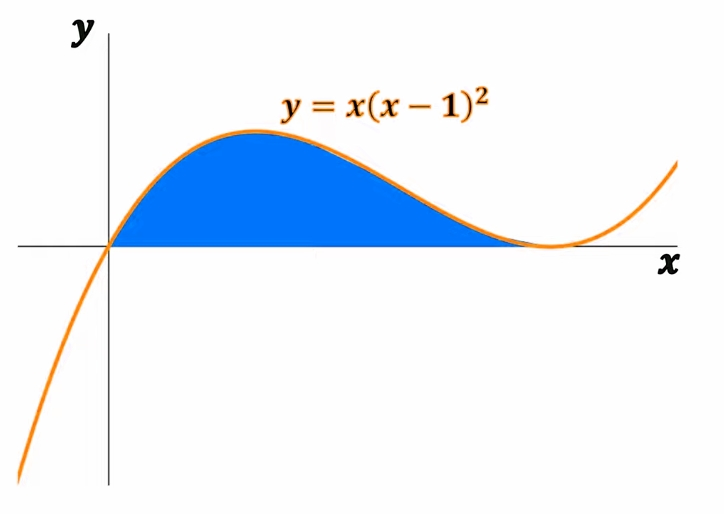
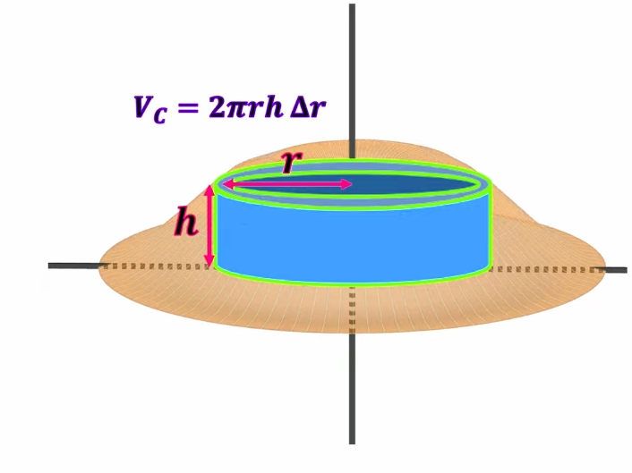
Ejercicio 6
Calcular el volumen del solido obtenido al girar la región limitada por las curvas en el eje x: y = 2 - \frac{1}{2}x, \quad y = 0, \quad x = 1, \quad x = 2
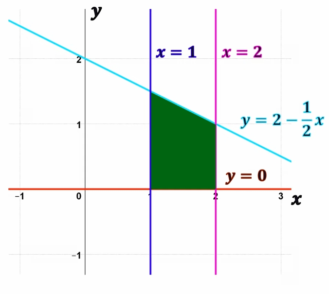
La región toca el eje x en todos los puntos, por lo que podemos usar el método de discos. Técnicamente podria usarse el de anillos, pero no se reduciría al mismo cálculo.
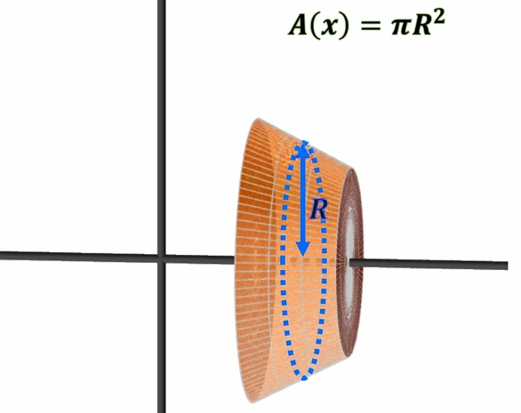
Ejercicio 7
Calcular el volumen del sólido generado al función en el eje y: y = x^2 - x^3 \quad y = 0
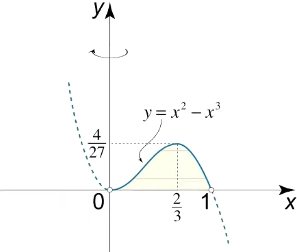
No es discos, no toca el eje y en todos los puntos. No tenemos dos funciones que estén una encima de la otra, por lo que no podemos usar el método de anillos. Debemos usar el de capas.
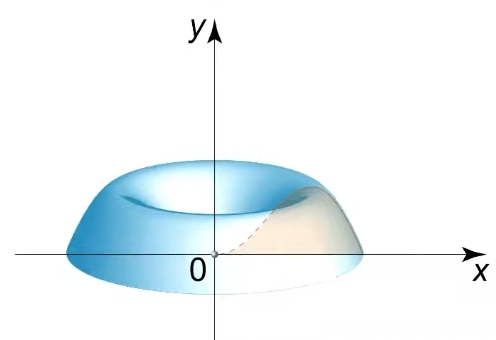
Ejercicio 8 (Aplicaciones)
Las funciones de oferta y demanda de un producto están dadas por: \text{Demanda: } P = f(x) = 20 - 0.25x \text{Oferta: } P = g(x) = 2x + 2 Determine:
La cantidad y el precio de equilibrio.
El excedente del consumidor y productor.
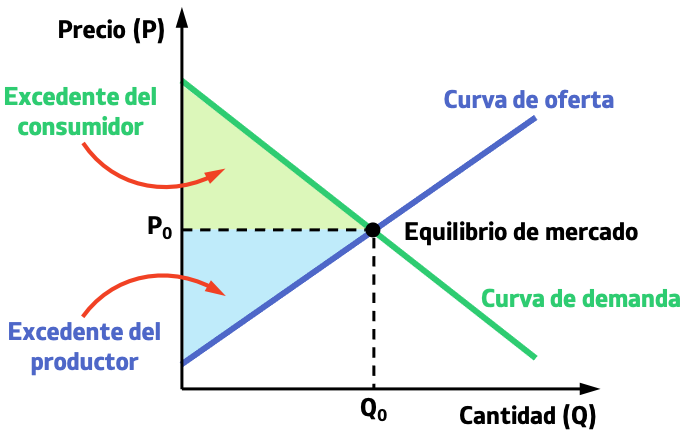
Para encontrar el precio de equilibrio, debemos igualar las funciones de oferta y demanda: 20 - 0.25x = 2x + 2 20 - 2 = 2x + 0.25x 18 = 2.25x x = \frac{18}{2.25} x = 8
Teniendo el cantidad de equilibrio, sustituimos en cualquiera de las dos funciones para encontrar el precio de equilibrio. P = 20 - 0.25(8) P = 20 - 2 P = 18
Para calcular el excedente del consumidor, debemos calcular el área entre la función de demanda y el precio de equilibrio. Siendo los limites de integración de 0 a la cantidad de equilibrio. EC = \int_0^8 (20 - 0.25x - 18) dx EC = \int_0^8 (2 - 0.25x) dx EC = 2x - \frac{0.25x^2}{2} \bigg|_0^8 EC = 2(8) - \frac{0.25(8)^2}{2} - (2(0) - \frac{0.25(0)^2}{2}) EC = 16 - \frac{0.25(64)}{2}
EC = 16 - \frac{16}{2} EC = 16 - 8 EC = 8
En cambio para el excedente del productor, debemos calcular el área entre la función de oferta y el precio de equilibrio. Siendo los limites de integración de 0 a la cantidad de equilibrio. EP = \int_0^8 (18 - (2x + 2)) dx EP = \int_0^8 (16 - 2x) dx EP = 16x - x^2 \bigg|_0^8 EP = 16(8) - (8)^2 - (16(0) - (0)^2) EP = 128 - 64 EP = 64
Ejercicio 9
Encontrar el centroide de la región delimitada por las funciones: y = x^3 \quad y = 8 \quad x= 0
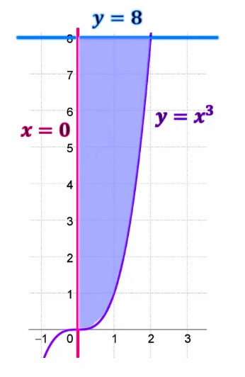
El centro de masa es un par de coordenadas (\bar{x}, \bar{y}). Para calcular el centro de masa, debemos calcular el área de la región delimitada por las funciones. Encontremos el punto de intersección entre las dos funciones: x^3 = 8 x = 2 Por lo que la integral va de 0 a 2. La función superior es 8 y la inferior es x^3. A = \int_0^2 (8 - x^3) dx A = 8x - \frac{x^4}{4} \bigg|_0^2
A = 8(2) - \frac{(2)^4}{4} - (8(0) - \frac{(0)^4}{4}) A = 16 - \frac{16}{4} A = 16 - 4 A = 12
Teniendo esta área, podemos calcular el centro de masa de la siguiente manera: \bar{x} = \frac{1}{A} \int_a^b x f(x) dx \bar{y} = \frac{1}{2A} \int_a^b (f(x))^2 dx
Coordenada x
\bar{x} = \frac{1}{12} \int_0^2 x(8 - x^3) dx \bar{x} = \frac{1}{12} \int_0^2 (8x - x^4) dx \bar{x} = \frac{1}{12} \left( 4x^2 - \frac{x^5}{5} \right) \bigg|_0^2
\bar{x} = \frac{1}{12} \left( 4(2)^2 - \frac{(2)^5}{5} - (4(0)^2 - \frac{(0)^5}{5}) \right) \bar{x} = \frac{1}{12} \left( 16 - \frac{32}{5} \right) \bar{x} = \frac{1}{12} \left( \frac{80}{5} - \frac{32}{5} \right) \bar{x} = \frac{1}{12} \left( \frac{48}{5} \right) \bar{x} = \frac{48}{60} \bar{x} = \frac{4}{5} \bar{x} = 0.8
Coordenada y
\bar{y} = \frac{1}{2(12)} \int_0^2 (8)^2 - (x^3)^2 dx \bar{y} = \frac{1}{24} \int_0^2 (64 - x^6) dx \bar{y} = \frac{1}{24} \left( 64x - \frac{x^7}{7} \right) \bigg|_0^2 \bar{y} = \frac{1}{24} \left( 64(2) - \frac{(2)^7}{7} - (64(0) - \frac{(0)^7}{7}) \right) \bar{y} = \frac{1}{24} \left( 128 - \frac{128}{7} \right) \bar{y} = \frac{1}{24} \left( \frac{896}{7} - \frac{128}{7} \right)
\bar{y} = \frac{1}{24} \left( \frac{768}{7} \right) \bar{y} = \frac{768}{168} \bar{y} = \frac{32}{7} \bar{y} \approx 4.6
Centroide
Entonces, el centro de masa es: C_m = (\bar{x}, \bar{y}) = (0.8, 4.6)